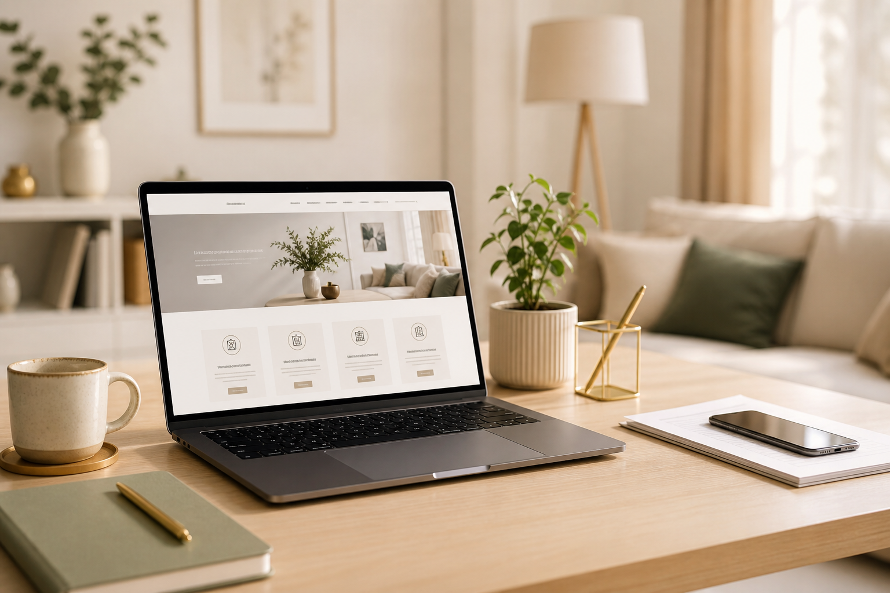
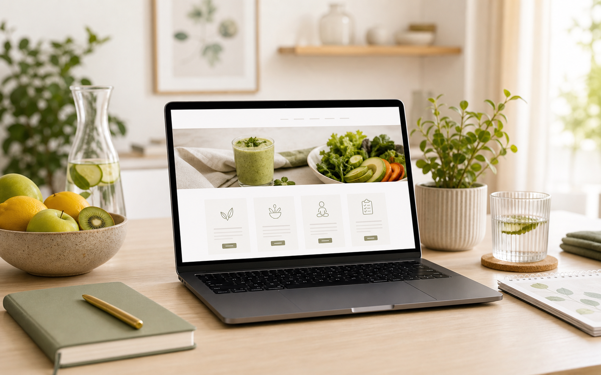
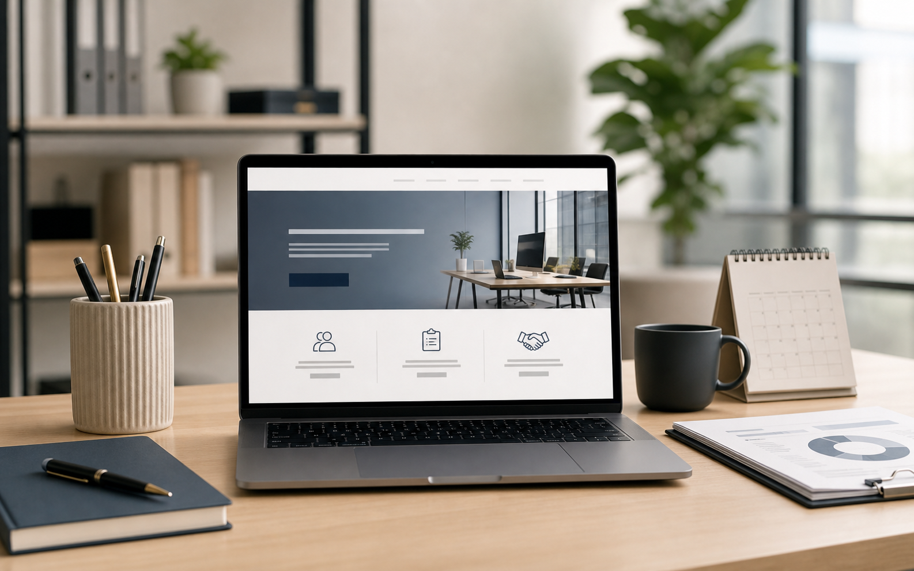
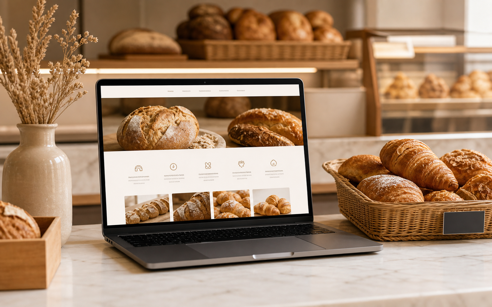
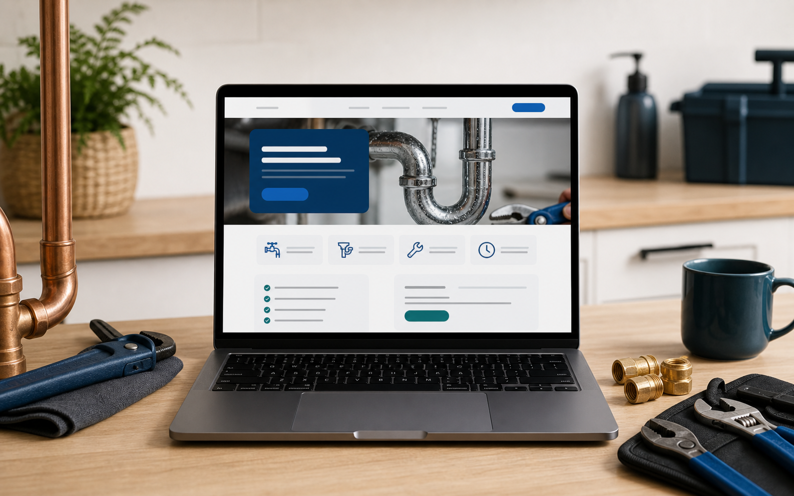
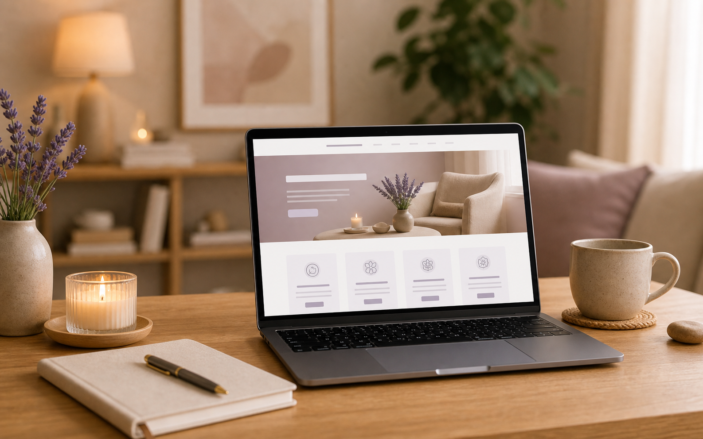
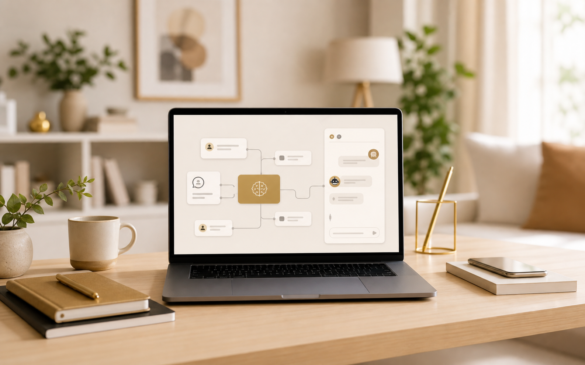

Une présence rassurante
Une page d’accueil soignée, des messages simples et un parcours qui guide vers la prise de contact.

Consultante en Création Digitale et Automatisation
J’accompagne les indépendants, consultants, coaches et petites entreprises avec des sites modernes, faciles à comprendre et pensés pour donner envie de vous contacter. Basée en Île-de-France, j’interviens partout en France.
Une page d’accueil soignée, des messages simples et un parcours qui guide vers la prise de contact.
Services, méthode, FAQ et contact structurés pour que vos visiteurs comprennent vite ce que vous proposez.
Formulaires, emails, prise de rendez-vous et automatisations simples selon vos besoins réels.
Créations
Ces cartes montrent le type de site que je peux créer pour différentes activités. L’idée n’est pas de copier un modèle, mais de construire une présence adaptée à votre métier, vos clients et votre façon de travailler.

COACHING & BIEN-ÊTRE
Objectif : Présenter l’approche, les programmes et rassurer avant une première prise de rendez-vous.
Contenu : Page d’accueil, offres, témoignages, FAQ, formulaire ou calendrier.
Résultat : Un site doux, crédible et facile à comprendre.

CONSULTING B2B
Objectif : Valoriser l’expertise, clarifier les missions et capter des demandes professionnelles.
Contenu : Expertise, accompagnements, méthode, cas d’usage, formulaire de contact.
Résultat : Une image sobre, sérieuse et rassurante.

COMMERCE LOCAL
Objectif : Donner envie, informer les clients et renforcer la visibilité locale.
Contenu : Produits, horaires, localisation, galerie, contact rapide.
Résultat : Une vitrine chaleureuse, claire et appétissante.

ARTISAN & DÉPANNAGE
Objectif : Inspirer confiance rapidement et faciliter l’appel ou la demande d’intervention.
Contenu : Zones desservies, prestations, urgences, avis, bouton téléphone visible.
Résultat : Un site direct, pratique et pensé pour les recherches locales.

SOIN & ACCOMPAGNEMENT
Objectif : Rassurer, expliquer la pratique et simplifier la prise de rendez-vous.
Contenu : Approche, séances, tarifs, FAQ, prise de contact douce et sécurisante.
Résultat : Une présence apaisante, professionnelle et humaine.
Services & tarifs
Des tarifs de lancement volontairement bas pour rester accessibles aux indépendants, artisans, consultants et petites entreprises. Le prix final dépend du nombre de pages, des contenus à créer et des outils à connecter.

Dès 490 €
Une présence claire avec accueil, services, à propos, FAQ et contact pour présenter votre activité avec sérieux.

Dès 120 €
Formulaires, réponses email, demandes de devis et outils connectés pour gagner du temps au quotidien.

Dès 190 €
Des assistants IA conçus pour répondre, qualifier une demande, préparer un brief, guider un prospect ou automatiser une tâche répétitive.

Dès 290 €
Un site plus moderne, plus lisible et mieux organisé si votre présence actuelle ne reflète plus votre activité.

Dès 39 € / mois
Une aide humaine pour faire évoluer les textes, les sections, les formulaires et les pages après la mise en ligne.
Méthode
On avance étape par étape : comprendre votre activité, structurer les contenus, créer les pages, connecter les outils utiles, puis publier quand tout est prêt.
Objectifs, cible, style, contenus à prévoir et priorités du site.
Design des sections, intégration WordPress, version mobile et formulaires.
Derniers ajustements, connexion du domaine et accompagnement pour la prise en main.
FAQ
Je suis basée en Île-de-France, mais je peux accompagner des clients partout en France à distance.
Le site vitrine commence à 490 € en tarif de lancement. Il faut aussi prévoir le nom de domaine, l’hébergement et éventuellement certains outils payants comme Calendly, une adresse email professionnelle ou des extensions WordPress premium.
Oui. Le site peut être modifié par la suite : textes, images, sections, nouvelles pages, services, formulaires, automatisations ou agents AI.
Oui. L’objectif de WordPress et Elementor est de vous permettre de modifier les textes et certaines sections simplement.
Je peux structurer et améliorer vos textes à partir de vos informations. Pour les images, nous pouvons utiliser vos propres photos, des visuels générés ou des images adaptées à votre activité.
Non. Si vous avez déjà un domaine, on le connecte au site. Sinon, je peux vous guider pour l’acheter et préparer la configuration.
Oui. On peut ajouter un bouton Calendly, WhatsApp, téléphone ou email selon la façon dont vous voulez recevoir les demandes.
Oui, selon vos besoins : formulaire, email automatique, demande de devis, prise de rendez-vous ou outils connectés.
Contact
Réservez un appel découverte pour m’expliquer votre activité, vos objectifs et le type de site dont vous avez besoin. Vous pouvez aussi me contacter directement par email ou téléphone.
Email : contact@enasdigital.fr
Téléphone : 07 61 68 84 25